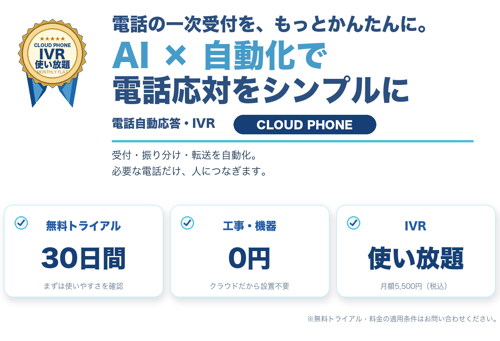
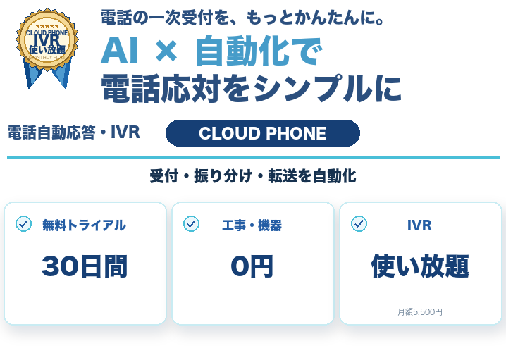
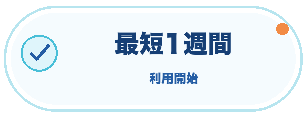
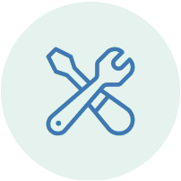

24時間受付
営業時間外もAIが一次受付
取り逃しを減らす
閉店後や不在時も自動応答。予約や伝言を受け付けます。
受付を止めない

企業・店舗・個人事業主まで、幅広い電話業務に対応
※導入社数は2024年11月時点。利用開始日は申込状況により異なります。
導入後の変化がひと目でわかる
閉店後や不在時も自動応答。予約や伝言を受け付けます。
受付を止めない店舗・事務所・外出先でも、同じ会社番号で対応できます。
どこでも会社番号電話が増えても、IVRの利用料金は変わりません。
IVR使い放題はじめやすい。場所を選ばない。運用しやすい。
市外局番をスマホ・PC・電話機で発着信。外出先でも同じ会社番号を使えます。
会社番号を持ち歩ける
02主装置や回線工事は不要。申し込み後、クラウドですぐに設定できます。
スピード導入通常のPBX導入で必要になる、高額な機材費用や工事費用はかかりません。
初期費用を抑えて導入受ける・分ける・つなぐ。必要な電話だけを、人へ。
営業時間外も自動で応答します。
取り逃しを減らす用件ごとに案内・担当先を切り替えます。
取り次ぎを減らす外出先でも会社番号で対応できます。
電話番から解放目の前の仕事を続けながら、会社の電話をきちんと受けられます。
一次受付を自動化し、折り返す用件を整理。
接客を中断しない予約・営業時間の案内を音声で自動化。
予約機会を逃しにくい予約・営業時間・アクセスを自動応答。
調理と接客に集中部署や担当者へ自動で振り分け・転送。
どこでも会社番号緊急度と担当を見分け、必要な電話だけ通知。
現場の手を止めない会社番号への着信を現場のスマホへ転送。
外出先でも対応毎日の電話業務が、どのように変わるかを具体的にご紹介します。
店舗・事務所・外出先でも、同じ会社番号で対応できます。
場所を選ばず電話対応予約・請求・サポートなどを判別し、必要な電話だけ担当者へつなぎます。
担当外の電話を減らす営業時間・アクセス・定型URLを、音声案内とSMSで自動送信できます。
同じ説明を何度もしない050、市外局番、0120・0800から番号を選択。スマホ・PC・専用電話機など、利用端末も業務に合わせて決められます。
主装置や回線工事は不要。管理画面から着信、転送、音声ガイダンス、営業時間などを設定します。
設定後はスマホやPCから会社番号を利用できます。申込状況や番号種別により開始時期は異なります。
自社に合う使い方や費用を、担当者がわかりやすくご案内します。
相談だけでも大丈夫です。現在の電話環境が決まっていない段階からご案内します。
外部クライアントからの電話を別住所へ直接取り次げるようになり、リモートワークでも電話業務を継続。
スマホ1台で市外局番を発着信。オフィス・自宅・外出先で利用し、電話の取り逃しを防止。
デリバリー用を含む3つの番号を1台の電話機とスマホで受け、スペースと運用コストを削減。
※掲載内容はCLOUD PHONE公式サイトの導入事例を要約しています。
01
利用したい番号、端末数、IVRやSMSなど必要な機能を確認します。
02

050・市外局番・0120などの番号種別と、利用端末を選択します。
03
管理画面で転送先、営業時間、音声ガイダンスなどを設定します。
04
スマホ・PC・専用電話機から会社番号で発着信できます。
※お申し込み状況や番号種別により、利用開始までの期間は異なります。
表示価格は税込です。SMS送信は1通ごとに料金が発生します。利用番号・端末数・オプションの組み合わせにより月額料金が変わります。
CONTACT
導入方法・機能・料金について、その場でご案内します。